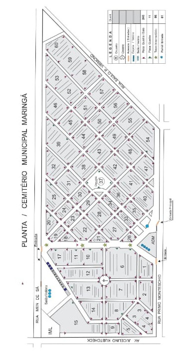

| MASSAR HASHIMOTO
QUADRA: 043
LINHA: 011
SEPULTURA: 015
Navegue pelo menu...
| TIO TADAO E TIA
QUADRA: 057
LINHA: 014
SEPULTURA: 035
Navegue pelo menu...
| ISURU NAKANO
QUADRA: 058
LINHA: 004
SEPULTURA: 021
Navegue pelo menu...
| MIDORI TAMASHIRO
QUADRA: 051
LINHA: 007
SEPULTURA: 017
Navegue pelo menu...
| WAGNER MASSAO NAKATA
QUADRA: 032
LINHA: 004
SEPULTURA: 010
Navegue pelo menu...
| MAPA DO CEMITÉRIO

Navegue pelo menu...